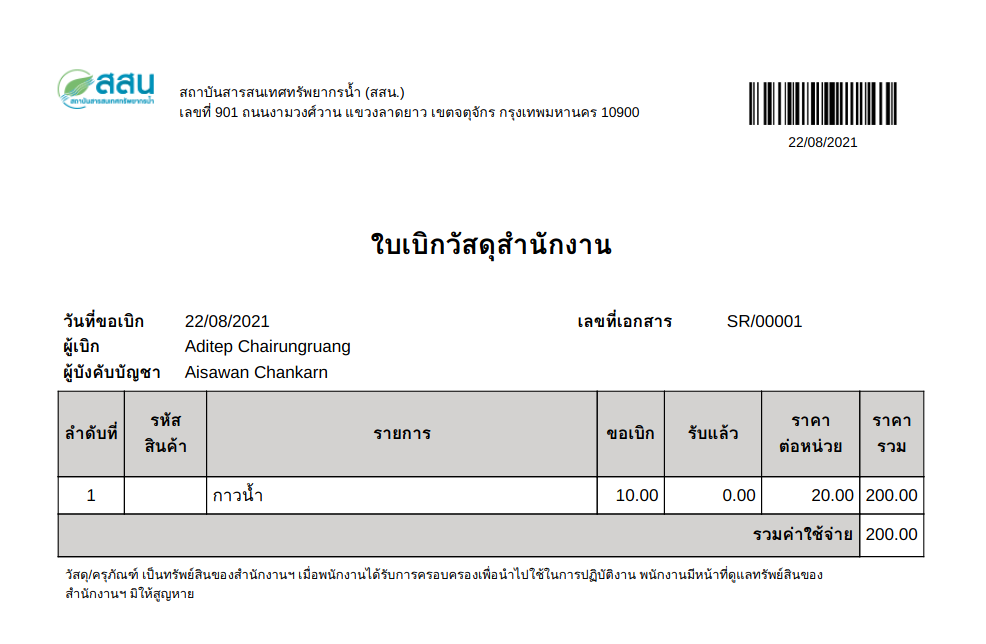
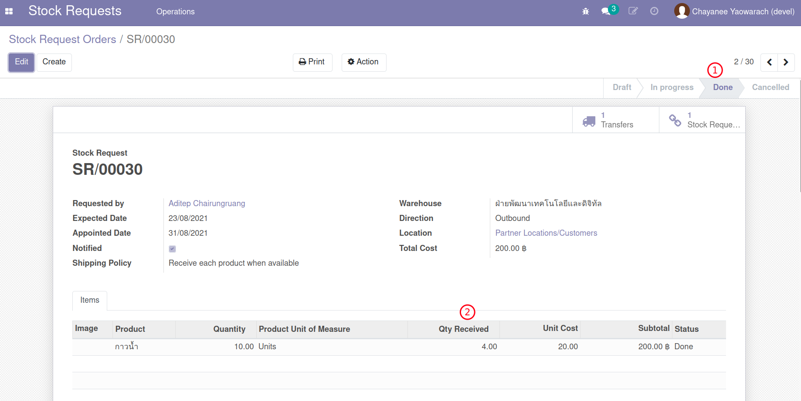
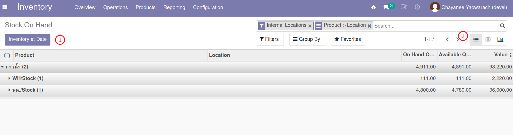
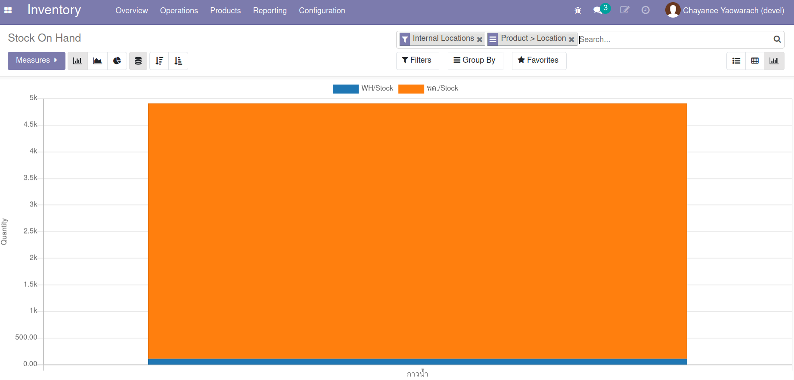
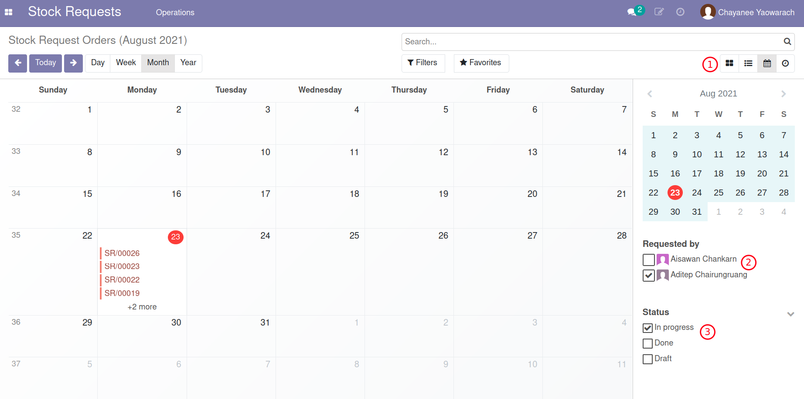

กระบวนการเบิกวัสดุคงคลัง (Stock Request)#
เอกสารนี้สำหรับ :: ผู้ดูแลคลังวัสดุ (Stock Request Manager)
นัดหมายรับวัสดุ#
สำหรับ Use Cases
- (1) ขอเบิกวัสดุและเบิกได้ทั้งหมด
- (2) ขอเบิกวัสดุแต่เบิกได้บางส่วน
Menu :: Stock Requests > Operations > Stock Request Orders
เมื่อมีการขอวัสดุเข้ามาทางที่ฝ่ายพัสดุ Stock Request Manager จึงเข้ามาที่ระบบเพื่อตรวจสอบและดำเนินการนัดหมายการรับวัสดุต่อไป
-
Stock Request Manager จะเห็นเอกสารของทุกคนในระบบตามสถานะต่างๆดังรูป

-
เปิดเอกสารที่ต้องการทำงาน และกดปุ่ม Edit เพื่อแก้ไข
- Appointed Date: เลือกวันที่ต้องการให้มารับวัสดุ
- กดปุ่ม Notify Appointment ระบบจะเปิด Wizard ที่มีข้อความแจังวันนัดรับวัสดุแก่ผู้ขอ (แก้ข้อความเพิ่มเติมได้)
- Smart Button แสดงให้เห็นว่ามีระบบได้มีการเตรียมการ Transfer ไว้แล้ว

-
ที่ Email Wizard
- ระบบได้เตรียมร่าง email ตาม Template: Make Appointment
- ระบบแนบฟอร์มใบขอเบิกวัสดุเป็น PDF ไว้กับ email
- กดปุ่ม Send เพื่อส่ง email ไปยังผู้ขอเบิก

-
เนื้อหา email จะมีการแนบไว้ที่ส่วนล่างของเอกสาร


End.
จำหน่ายวัสดุทั้งหมด#
สำหรับ Use Cases
- (1) ขอเบิกวัสดุและเบิกได้ทั้งหมด
Menu :: Stock Requests > Operations > Stock Request Orders
เมื่อถึงวันนัดรับวัสดุ Stock Request Manager ทำการจำหน่ายวัสดุออกจากระบบ (Transfer Out)
- ค้นหาและเปิดเอกสารตามเลขที่ที่ต้องการและคลิกไปที่ Smart Button เพื่อเปิดเอกสาร Transfers ที่ระบบสร้างรอไว้
-
ที่หน้าต่าง Transfer ทำการเช็คจำนวนที่มีในคลัง
- Tab Operations: แสดงรายการที่ต้องการเบิก โดยระบบจะแสดงสถานะความพร้อม
- กดปุ่ม Check Avalilability เพื่อจองรายการเบิก (ตามยอด On Hand)
- Tab Detailed Operations: แสดงรายการจองที่พร้อมจำหน่าย

-
กรอกชื่อผู้ที่เข้ามารับวัสดุจริง Receipt By (ไม่จำเป็นต้องเป็นคนเดียวกับผู้ขอเบิก) และวันที่รับวัสดุ Receipt Date
-
สำหรับกรณีที่ต้องการจำหน่ายวัสดุตามจำนวนที่ขอเบิก ไม่จำเป็นต้องกรอกยืนยันจำนวน Done Quantity สามารถกดปุ่ม Validate ตามด้วย Apply ได้ทันที (ระบบจะ Transfer ทั้งหมดตามจำนวนที่มี)

-
ระบบจะส่ง email ไปยัง 1) ผู้ขอเบิก 2) ผู้ัรับเบิก
-
เนื้อหา email จะมีการแนบไว้ที่ส่วนล่างของเอกสาร


End.
จำหน่ายวัสดุเป็นบางส่วน#
สำหรับ Use Cases
- (2) ขอเบิกวัสดุแต่เบิกได้บางส่วน
Menu :: Stock Requests > Operations > Stock Request Orders
เมื่อถึงวันที่นัดหมายให้มารับวัสดุ Stock Request Manager จะทำการจำหน่ายวัสดุให้ผู้รับเบิก และเข้ามาที่ระบบเพื่อจำหน่ายวัสดุออกจากระบบ (Transfer)
- ค้นหาและเปิดเอกสารตามเลขที่ที่ต้องการและคลิกไปที่ Smart Button เพื่อเปิด Transfers ที่ระบบสร้างไว้
- ที่หน้าต่าง Transfer กดปุ่ม Check Avalilability เพื่อจองวัสดุ
- กรอกชื่อผู้รับ Receipt By (ไม่จำเป็นต้องเป็นคนเดียวกับผู้ขอเบิก) และวันที่รับวัสดุ Receipt Date
-
สำหรับกรณีที่ต้องการจำหน่ายวัสดุเป็นบางส่วน
- ให้ใส่จำนวนที่เบิกได้ที่ช่อง Done Quantity
- กดปุ่ม Validate ระบบจะถามว่าจะสร้าง Back Order หรือไม่ให้กดปุ่ม No Backorder

Note
กรณีนี้เรากดปุ่มไม่สร้าง Backorder เพราะต้องการจำหน่ายวัสดุเพียงบางส่วน เมื่อกลับไปดูที่หน้าต่าง Stock Request Order จะเห็นสถานะเปลี่ยนเป็น Done ทันที
แต่ถ้ากดปุ่ม Create Backorder ระบบจะสร้าง Transfer สำหรับจำหน่ายจำนวนที่เหลือได้ในอนาคต
-
ระบบจะส่ง email ไปยัง 1) ผู้ขอเบิก 2) ผู้ัรับเบิก ด้วยจำนวนเท่าที่ได้รับจริง
-
เนื้อหา email จะมีการแนบไว้ที่ส่วนล่างของเอกสาร


-
กลับไปที่เอกสาร Stock Request Order จะเห็นได้ว่า
- สถานะเปลี่ยนเป็น Done
- จำนวนรับ Qty Received เท่ากับจำนวนจำหน่ายบางส่วน

End.
แจ้งยกเลิกการรับวัสดุ#
สำหรับ Use Cases
- (3) ขอเบิกวัสดุแต่ถูกยกเลิกโดยฝ่ายพัสดุ
Menu :: Stock Requests > Operations > Stock Request Orders
เมื่อมีการขอวัสดุสำนักงาน Stock Request Manager จะได้รับ email คำขอ
- เปิดเอกสารที่ต้องการทำงาน และกดปุ่ม Edit เพื่อกรอกข้อมูลเช่นเดียวกับการนัดรับวัสดุ
- กดปุ่ม Notify ระบบจะเปิด Wizard ที่มีข้อความการแจ้งเตือนผู้รับ
-
ให้ทำการเปลี่ยน Template เป็น Cancel Appointment ตามรูป

-
กดปุ่ม Send เพื่อส่ง email สำหรับการยกเลิก
- คลิก Smart Button เพื่อเปิด Transfers ที่ระบบสร้างไว้
-
ที่หน้าต่าง Transfer กดปุ่ม Cancel พร้อมกรอกเหตุผล

-
กลับไปที่เอกสาร Stock Request Order จะเห็นได้ว่า
- สถานะเปลี่ยนเป็น Done
- จำนวนรับ Qty Received เท่ากับ 0
End.
สร้าง Inventory Adjustment#
สำหรับ Use Cases
- (5) การนับสินค้าและปรับยอดจำนวนวัสดุในคลัง
Menu :: Inventory > Operations > Inventory Adjustments
-
กดปุ่ม Create เพื่อสร้าง Inventory Adjustment ใหม่
- Inventory Reference: ตั้งชื่อการปรับปรุงสินค้า เช่น "นับสินค้า วันที่ xx/xx/xxxx"
- Locations: เลือก location เช่น พด./Stock
- Products: เลือกวัสดุเท่าที่ต้องการนับ หรือปล่อยว่างเพื่อนับทุกวัสดุ
- Include Exhausted Product: เลือกใช้ หากรวมถึงวัสดุที่ปัจจุบันอาจมีจำนวนเท่ากับศูนย์
- Accounting Date: วันที่บันทึกบัญชีหรือปล่อยว่างเพื่อใช้วันที่ปัจจุบัน
- Counted Quantities:
- Default to stock on hand: ต้องการให้แสดงจำนวนปัจจุบันก่อนเสมอ
- Default to zero: ไม่ต้องการแสดงจำนวนปัจจุบัน (แสดงค่าเป็น 0)

-
ใส่จำนวนที่นับได้จริงของแต่ละวัสดุที่ช่อง Counted

-
กดปุ่ม Validate Inventory ระบบจะทำการปรับยอดคงเหลือของแต่ละวัสดุใหม่
End.
ดูรายงานที่เกี่ยวข้องกับคลังวัสดุ#
สำหรับ Use Cases
- (6) รายงานที่เกี่ยวข้องกับคลังวัสดุ
- Stock Card
- Inventory Report
- Forecasted Inventory
- Inventory Valuation
Note
รายงานด้านคลังสินค้าใช้หลักการ Double Entry นั่นหมายถึง
- Onhand Quantity = Actual In Qty - Actual Out Qty
- Future Quantity = Onhand Quantity - Reserved Quantity
- Reserved Quantity = Planned Out Qty - Planned In Qty
Stock Card#
Menu :: Inventory > Reporting > Stock Card
รายงานนี้ใช้สำหรับดูรายการเข้าออกจาก Location ของสินค้าตัวหนึ่ง ในช่วงเวลาหนึ่ง โดยผู้ใช้งานจะใส่ค่าการค้นหาตามต้องการก่อนดูรายงาน
- Period / Start Date / End Date: ช่วงเวลาที่สนใจ
- Products: วัสดุที่สนใจ
- Location: สถานที่จัดเก็บ
-
สามารถออกรายงานได้ทั้งแบบ 1. View 2. PDF 3. Excel


Inventory Report#
Menu :: Inventory > Reporting > Inventory Report
รายงานนี้ใช้สำหรับดูข้อมูลมูลค่าของในคลัง ณ เวลาใดเวลาหนึ่ง โดยรายงานจะมี
- กำหนดวันที่ต้องการดูมูลค่าของในคลัง (อดีตหรือปัจจบัน)
-
สามารถค้นหาข้อมูล (Filter) บิดรายงานตามมุมมองที่ต้องการ (Group By) และดูรายงานได้หลายรูปแบบ (Views)



Forecasted Inventory#
Menu :: Inventory > Reporting > Forecasted Inventory
รายงานนี้เน้นไปที่การมองความต้องการในอนาคต Future Quantity โดยรวม Reserved Quantity (มีแผนใช้งาน) เข้ามาเป็นตัวแปรด้วย
- รายงานสามารถค้นหาตามวัสดุ
- ช่วงเวลาที่สนใจ
-
แสดงผลเป็นรูปกราฟ

Inventory Valuation#
Menu :: Inventory > Reporting > Inventory Valuation
รายงานนี้เน้นไปที่การดูมูลค่าของสินค้าคงคลัง โดยสามารถดูย้อนประวัติของมูลค่าคลังสินค้าที่เกิดขึ้นในทุกๆ Transaction ตามมูลค่า (Cost) ในขณะนั้น

การใช้งานอื่นๆ#
สำหรับ Use Cases
- (7) การใช้งานอื่นๆ
หัวข้อนี้นำเสนอเรื่องอื่นที่อาจเป็นประโยชน์ต่อการใช้งาน
- การดูวันกำหนดรับของ Stock Request ด้วยปฏิทิน
- การดูภาพรวมของ Stock Request ทั้งหมด
Menu :: Stock Requests > Operations > Stock Request Orders
มุมมองปฏิทินสามารถช่วยให้ผู้จัดเตรียมวัสดุล่วงหน้าในอนาคตได้สะดวกขึ้น
- หน้าต่างของ Stock Request Orders มีหลายมุมมอง ให้เลือกมุมมองแบบปฏิทิน
- กรองเฉพาะผู้ขอที่ต้องการ
-
กรองสถานะของเอกสาร เช่น In Progress

หน้าต่างต่อไปนี้จะรวมรายการรายบรรทัดของ Stock Requests ของทุกๆ Stock Request Orders ทำให้สามารถดูดูมุมมองเชิงวิเคราะห์ของการเบิกสินค้าในภาพรวมได้อย่างอิสระ
Menu :: Stock Requests > Operations > Stock Requests